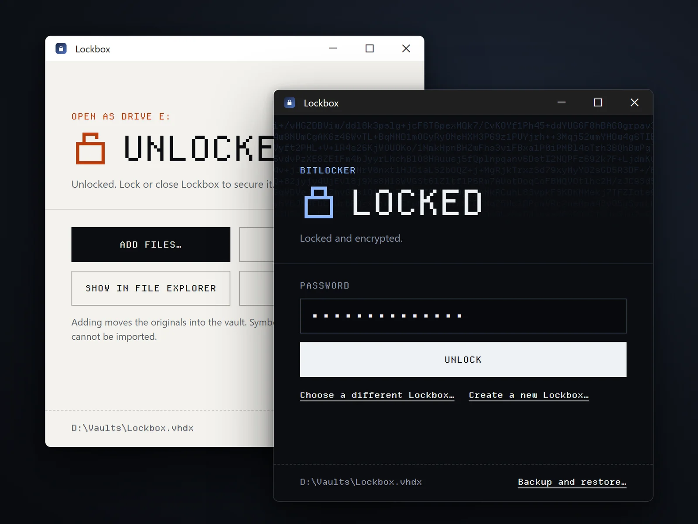

Tools / T-02 Download · Mac + Windows

- Status
- Released
- Timeline
- Since August 2026
- Runs on
- macOS 13+ on Apple silicon, Windows 10/11 Pro
- Encryption
- AES-256 disk images, BitLocker
- Built with
- Swift, Rust, PowerShell, JavaScript
- Made by
- Me, with AI for code
Why
I needed somewhere on my own computer to keep prompts and API keys behind a password. I tried VeraCrypt and Cryptomator, but they were more complex than what I was trying to do. VeraCrypt asks you to choose an encryption algorithm, a hash and a filesystem before you can store a file, and Cryptomator is built around vaults that sync through cloud storage.
Mac and Windows already have the encryption, in encrypted disk images and BitLocker, but using it by hand means creating, opening and ejecting a disk yourself. Lockbox does only the part I needed: pick a folder, set a password, add files, lock.
A password-protected ZIP is simpler still, but anyone can read its file names, and every file you open is extracted as a readable copy. A ZIP does travel better: any computer opens it.
VeraCrypt
- Create Volume
- Choose an encrypted file container
- Choose a standard or hidden volume
- Pick where the file goes
- Choose an encryption algorithm and hash
- Set the volume size
- Set a password
- Choose a filesystem
- Move the mouse to gather randomness
- Format
- Pick a drive slot and mount
- Copy files in
- Dismount
Cryptomator
- Add a vault
- Name it
- Choose where it’s stored
- Set a password
- Choose whether to make a recovery key
- Unlock
- Reveal the drive
- Copy files in
- Lock
Lockbox
- Create Lockbox
- Pick a folder and set a password
- Add files
- Lock, or close the window
How it was built
Lockbox started as a Mac app, with AI agents writing most of the code from my direction. The Windows version is a separate native app built on BitLocker, sharing the Mac app’s behaviour and wording.
On a Mac, a SwiftUI app drives Apple’s hdiutil to create and open an AES-256 encrypted disk image. On Windows, a Tauri app with a Rust backend runs PowerShell to unlock a BitLocker volume inside a virtual disk. Both pass the password on standard input, so it never appears in arguments, settings or logs.
Unit tests cover the logic, but locking only counts if it works on a real disk. On the Mac, scripts quit the app, close its Finder window and crash it with a vault open, and check that Lockbox locks the vault or, after a crash, reports it as still open. On Windows, tests create, unlock and lock real BitLocker vaults with administrator rights.
Before the Windows release, two AI agents reviewed every source file of both apps, and each finding was confirmed in the code before it was fixed. One fix broke the app: turning off PowerShell’s module autoloading also stopped a module BitLocker needs, so Windows 0.1.1 couldn’t create or unlock vaults. Tests against real BitLocker vaults caught it, and 0.1.2 fixed it the same day.
Mac
- LockboxSwiftUI app
- hdiutilApple’s disk image tool
- Encrypted disk imageAES-256, APFS sparse bundle
Windows
- LockboxTauri app with a Rust backend
- PowerShellBitLocker module, run as administrator
- Virtual diskVHDX holding a BitLocker volume
Trade-offs
Lockbox keeps a folder and a password, and leaves out or hands to the system everything else. Each of those choices keeps it simple and has a price.
| Choice | What you get | What it costs |
|---|---|---|
| No accounts or cloud sync | Nothing to sign up for. The vault is a file on your computer. | You back it up yourself, by copying the file while it’s locked. |
| No password recovery | The password is the only way in. | Forget it and the files are gone. |
| The system’s own encryption | No settings, and no encryption code of Lockbox’s own to get wrong. | On Windows, creating a vault needs Pro and administrator approval. A vault opens only on the system that made it. |
| Locked means checked | Lockbox never says Locked while the files are readable. | If a file in the vault is still open, you close it before you can lock. |
Locked means checked
An eject can fail quietly or leave the encrypted disk attached. Lockbox ejects without forcing, then checks that the disk is really gone before it says Locked. Anything it can’t confirm shows as a state of its own, never as Locked.
- Youchoose Lock, close the vault’s window or quit
- Lockboxejects the vault without forcing it, then checks that the disk is gone
- Locked
- The disk is gone.
- Unlocked
- A file in the vault is still open, so the eject failed. An error says so.
- Not locked
- The drive is gone but the disk is still attached. Finish Locking detaches it.
- Unverified
- The check failed or timed out.
So far
Lockbox is free for Mac and Windows. Neither app is signed yet, so macOS and Windows warn before the first launch. Signing comes next.
- Mac 0.2.7
- Mac 0.2.8Checks the encryption of a vault that is already open.
- Windows 0.1.0The first Windows release.
- Windows 0.1.1The review’s fixes. Couldn’t create or unlock vaults, and was replaced the same day.
- Windows 0.1.2Fixes 0.1.1 and holds the vault file open while it is in use.
What I learned
Simple on the surface takes work underneath.
Locking in one click meant handling every way an eject can fail, so the app never says Locked by mistake.
Check what each system offers before you build on it.
Lockbox was built around the Mac’s encrypted disk images, which Windows doesn’t have. The Windows version had to become its own app on BitLocker, and Windows Home can’t turn BitLocker on at all.
Test the path people take.
Windows 0.1.1 passed every unit test and still couldn’t create a vault, because none of the tests ran as administrator.
VeraCrypt is a trademark of IDRIX. Cryptomator is a trademark of Skymatic GmbH. Mac, macOS and Finder are trademarks of Apple Inc. Windows and BitLocker are trademarks of Microsoft Corporation. Lockbox is an independent app, not affiliated with or endorsed by any of them. Type: Departure Mono (SIL OFL). Icons: Pixelarticons.
Download
Install on Mac
- Open the ZIP and drag Lockbox.app into Applications.
- Choose Create Lockbox, pick a folder for the vault, and set a password of 12 characters or more.
- Allow Finder Automation if asked. It lets closing the vault’s Finder window lock it.
Requires an Apple silicon Mac on macOS 13 or later. The app isn’t notarized by Apple yet. If macOS blocks it, see Apple’s guide to opening apps from unidentified developers.
Install on Windows
- Extract the ZIP, ideally into a folder under Program Files, and run Lockbox.exe.
- Approve the administrator prompt. Windows needs it to open disk images.
- Choose Create Lockbox, pick a folder for the vault, and set a password of 12 characters or more.
Creating a vault needs Windows 10 or 11 Pro, Enterprise or Education, because Windows Home can’t turn on BitLocker. The app isn’t code-signed yet, so SmartScreen may warn you before the first launch.